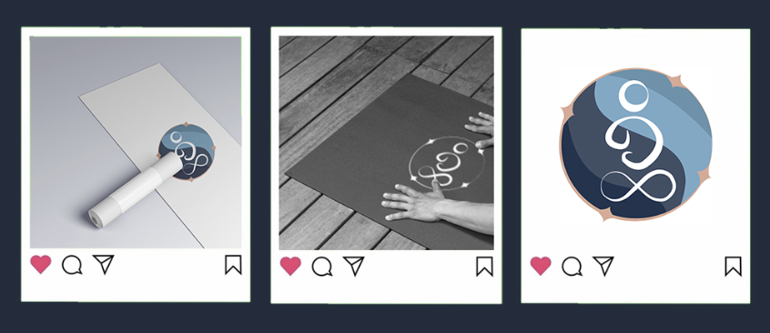

Final Designs
The final brand identity combines soft, flowing shapes that align with the magician archetype with a calming version of the Milwaukee flag's color palette to to show both movement and mindfulness. The figure in the logo represents unity and community, and a sense of balance.
Mockups
Mockups demonstrate how the identity will function across real world applications, including social media posts and physical materials.

Design Rationale
The rebrand focuses on creating a balance between minimalism and expressive flow-like forms. I included curved flowing lines to represent the fluidity of yoga movements.
The color palette was chosen to not only keep the Milwaukee vibes, but to also evoke calmness and trust, with soft blues contrasted by warm gold accents. This combination creates a welcoming yet elevated aesthetic that aligns with Milwaukee Yoga Social’s community driven values.